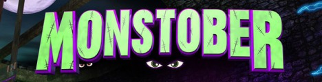
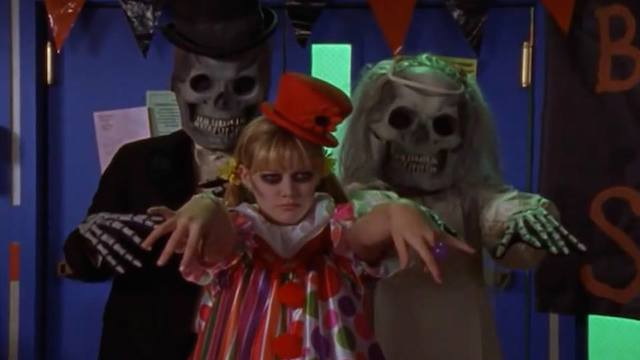
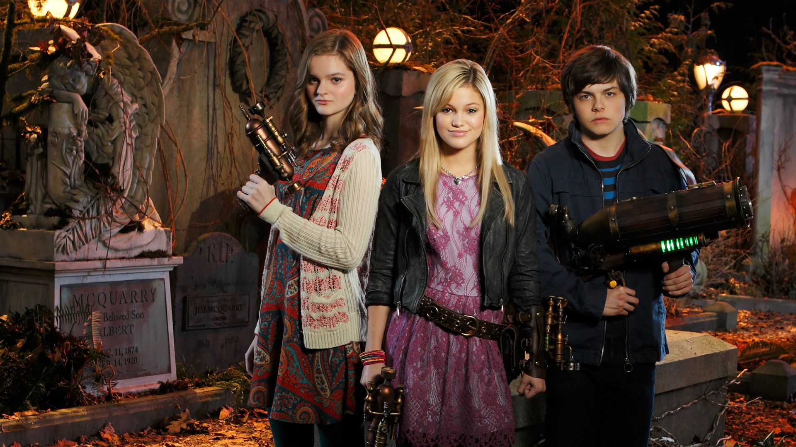

Season 1, Episode 14- mutANT farm
Season 2, Episode 13- mutANT farm 2
Season 3, Episode 11- mutANT farm 3
Season 2, Episode 1- Costumes and Courage
Season 3, Episode 20- Horror Stories and Halloween Scares
Season 4, Episode 15- Scary Spirits and Spooky Stories
Season 1, Episode 9- Cyd and Shelby’s Haunted Escape
Season 1, Episode 6- Boys II Mensa
Season 2, Episode 6- Who’s Afraid Of Cory Wolf?
Season 5, Episode 5- Witches Of Pennbrook
Season 5, Episode 17- And Then There Was Shawn
Season 2, Episode 7- Camp Kiki Slasher
Season 2, Episode 8- Treehouse of Terror
Season 4, Episode 7- In your Wildest Screams
Season 2, Episode 3- Howloween
Season 3, Episode 2- Howloween 2: The Final Reckoning
Season 3, Episode 10- The Trickening
Season 2, Episode 11- A Very Scary Story
Season 1, Episode 11- Girl Meets World of Terror 1
Season 2, Episode 18- Girl Meets World of Terror 2
Season 3, Episode 15- Girl Meets World of Terror 3
Season 2, Episode 25- Scary Had a Little Lamb
Season 3, Episode 15- Le Halloween
Season 4, Episode 14- Fright Knight
Season 1, Episode 12- Summerween
Season 1, Episode 17- Torn Between Two Hannahs
Season 1, Episode 18- Next of Pumpkin
Season 2, Episode 1- The Whining
Season 3, Episode 1- Ghost Bummers
Season 3, Episode 23- The Runaway Bride of Frankenstein
Season 4, Episode 18- The Ghostest With the Mostest
Season 1 Episode 17 Tale of the Haunted Firehouse
Season 1, Episode 23- All Howls Eve
Season 2, Episode 19- Virtual Insanity
Season 1, Episode 14- October 31st
Season 1, Episode 17- Night of the Living Virus
Season 1, Episode 5- Kang-A-Rooney
Season 2, Episode 3- Helgaween-A-Rooney
Season 3, Episode 4- Haunt-A-Rooney
Season 4, Episode 3- Scare-A-Rooney
Season 1, Episode 24- Night of the Day of the Dead
Season 1, Episode 10- Ghoul Friend
Season 3, Episode 6- Black and White
Season 3, Episode 17- Entombed
Season 4, Episode 9- The Scariest Story Ever: A Mickey Mouse Halloween Spooktacular
Season 1, Episode 15- Halloween
Season 1, Episode 9- One Good Scare Ought to Do It
Season 1, Episode 22- The Monster of Phineas and Ferbinstein
Season 3, Episode 22- That’s the Spirit
Season 4, Episode 19- Druselsteinoween Face Your Fear
Season 4, Episode 18- Terrifying Tri-State Trilogy of Terror Part 1 and 2
Season 2, Episode 2- A Hero for Halloween
Season 1, Episode 11- The Baxtercism of Levi Grayson
Season 2, Episode 16- Switch or Treat
Season 3, Episode 10- Creepin’ it Real
Season 4, Episode 1- Don’t Trust the G in Apt 4B
Season 3, Episode 34- Terrifying Tales of Recess
Season 2, Episode 4- Halloween it Up ( Beam it Up)
Season 3, Episode 25- Haunt It Up
Season 2, Episode 18- A So Random Halloween Special
Season 2, Episode 2- Don’t Have a Cow
Season 1, Episode 18- Sea Monster Mash
Season 1, Episode 19- The Ghost in Suite 613
Season 3, Episode 12- Arwinstein
Season 3, Episode 11- The Ghost and Mr. Martin
Season 1, Episode 6- All-New Halloween Spooktacular
Season 3, Episode 2- Halloween

Bride of Boogedy
Don't Look Under the Bed
Edward Scissorhands
Frankenweenie
Girl Vs. Monster
Halloweentown
Halloweentown 2- Kalabar's Revenge
Halloweentown High
(Return to)Halloweentown
Haunted Mansion
Hocus Pocus
Hocus Pocus 2
Invisible Sister
Mickey's Tale of Two Witches
Mom's Got a Date With a Vampire
Mr. Boogedy
Muppets Haunted Mansion
Nightmare Before Christmas
Phantom of the Megaplex
Spooky Buddies
The Adventures of ichabod and Mr. Toad
The Ghosts of Buxley Hall
The Scream Team
Twitches
Twitches Too
Under Wraps
Zombies
Zombies 2
Zombies 3